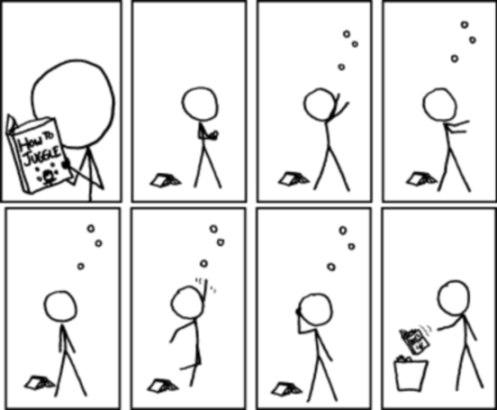
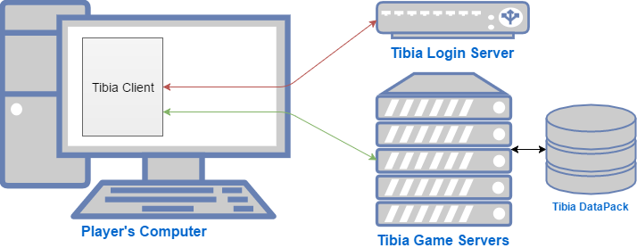
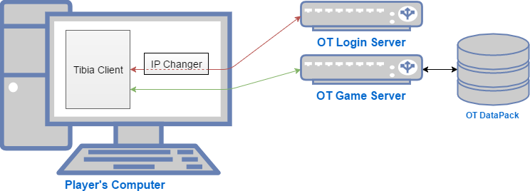
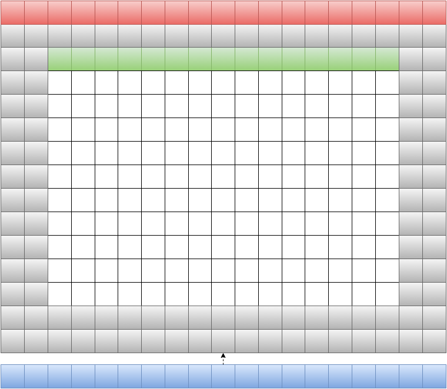
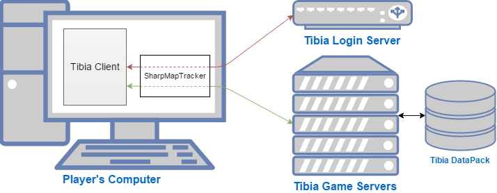
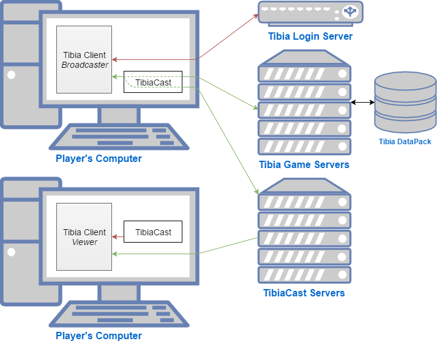
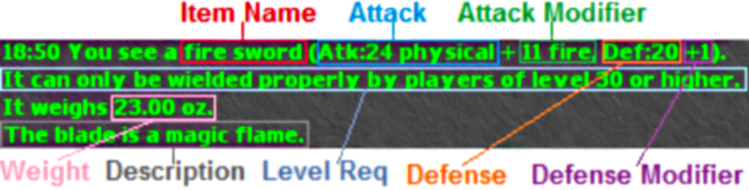
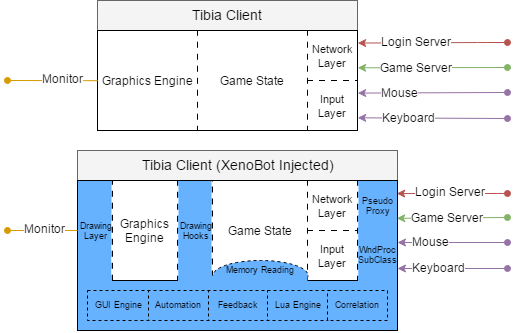
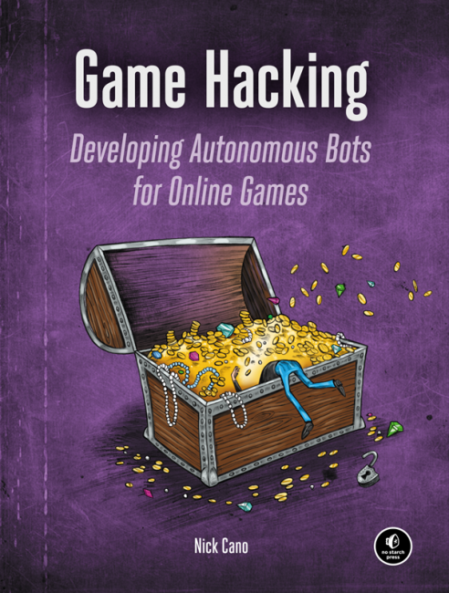

name: inverse layout: true class: center, middle, inverse --- #+1,000,000 -0: Cloning a Game Using Game Hacking and Terabytes of Data A look at how we used bots, proxies, crawlers, and in-game replays to automatically generate cloned game content. .footnote[ #### Talk by *Nick Cano* ##### Project by *Cavitt Glover*, *Joshua Kelly*, *Joseph Bingham*, *Nico Kunning*, *Samuel Gros*, and *Nick Cano* ] --- layout: false .left-column[ ## Introduction ] .right-column[ ### Who? An international mixed bag of game hackers, software engineers, and gamers. ### What? Using bots and crawlers to generate a million lines of code from millions of in-game replays and thousands of wiki pages. ### Why? To create a high quality, 1-for-1 clone of a game called Tibia with a small team and limited resources. ] --- .left-column[ ## Introduction ## About Me ] .right-column[ - 23 years old - Author of *Game Hacking: Developing Autonomous Bots for Online Games* - CEO & Lead Engineer at XenoBot - Senior Security Engineer at Bromium - Third time speaking at the best hacker conference in the world ] --- .left-column[ ## Introduction ## About Me ## Takeaways ] .right-column[ - Cool anecdotes of non-conventional game dev & hacking - Applying common hacking and automation techniques to gaming frontier - Example of applying technical skills to whimsical projects ] --- .left-column[ ## Introduction ## About Me ## Takeaways ] .right-column[ - Cool anecdotes of non-conventional game dev & hacking - Applying common hacking and automation techniques to gaming frontier - Example of applying technical skills to whimsical projects - Won't learn to juggle <p align="center">  </p> ] --- template: inverse ## Background Information --- ## Background Information .left-column[ ## Tibia ] .right-column[ - 2D MMORPG created in 1997 by *Cipsoft GmbH* - Millions of players from all over the world <sub><sub><sup><sup><sup><sup>mostly Brazil</sup></sup></sup></sup></sub></sub> - Ruled by bots <p align="center">  </p> ] --- ## Background Information .left-column[ ## Tibia ## OpenTibia ] .right-column[ - An ecosystem of open-source projects for running custom Tibia servers - First engine started in 2001, dubbed *OTServ* - OTServ stable by 2004 - Hundreds of OT servers, tens of thousands of players <p align="center">  </p> ] --- template: inverse ## Generated Assets: Map --- ## Generated Assets: Map .left-column[ ## Structure ] .right-column[ - 2-dimensional tile-based map - Extremely large (roughly 13,000,000 tiles) - Completely server-side - Sent to the client on a need-to-know basis, based on player's location - Only need-to-know is kept in-memory, fleeting - Impossible to spoof location ] --- ## Generated Assets: Map .left-column[ ## Structure - In-game ] .right-column[ <p align="center"> <img width="90%" height="90%" src="images/tibiamovement.gif"> </p> ] --- ## Generated Assets: Map .left-column[ ## Structure - In game - In memory ] .right-column[ <p align="center"> <img width="80%" height="80%" src="images/Map.png"> </p> ] --- ## Generated Assets: Map .left-column[ ## Structure - In game - In memory - Moving Right ] .right-column[ <p align="center"> <img width="80%" height="80%" src="images/MapMoveRight.png"> </p> ] --- ## Generated Assets: Map .left-column[ ## Structure - In game - In memory - Moving Right - Moving Down ] .right-column[ <p align="center">  </p> ] --- ## Generated Assets: Map .left-column[ ## Structure - In game - In memory - Moving Right - Moving Down - Floors ] .right-column[ - 16 floors - Top floor is *0* - Bottom floor is *15* - Ground floor is *7* ] --- ## Generated Assets: Map .left-column[ ## Structure - In game - In memory - Moving Right - Moving Down - Floors ] .right-column[ <p align="center"> <img width="90%" height="90%" src="images/tibiafloorchange.gif"> </p> ] --- ## Generated Assets: Map .left-column[ ## Structure - In game - In memory - Moving Right - Moving Down - Floors ] .right-column[ **On floors *0*-*7*:** floors *0*-*7* are kept in-memory **On floors *8*-*13*:** current floor, 2 floors below, and 5 floors above are kept in-memory **On floor *14*:** current floor, 1 floor below, and 6 floors above are kept in-memory **On floor *15*:** current floor and 7 floors above are kept in-memory ] --- ## Generated Assets: Map .left-column[ ## Structure - In game - In memory - Moving Right - Moving Down - Floors ## Decisions - Method ] .right-column[ *Can we continously dump the map from memory?* **No, volatile** *Can we hook drawing layer and interpret map from drawn sprites?* **Yes, but inefficient :(** *Can we intercept packets and dump map information?* **Yes, and very efficient :)** ] --- ## Generated Assets: Map .left-column[ ## Structure - In game - In memory - Moving Right - Moving Down - Floors ## Decisions - Method - Execution ] .right-column[ *How can we intercept the packets*? **SharpMapTracker** *Where will we get all of the data?* **TibiaCast Recordings** *Will it work?* **Yes!** ] --- template: inverse ## Architecture Interlude --- ## Architecture Interlude .left-column[ ### SharpMapTracker ] .right-column[ - Open-source Tibia network proxy that generates OTBM map from captured map packets - Our fork has additional data logging functionality for many more packet types <p align="center">  </p> ] --- ## Architecture Interlude .left-column[ ### SharpMapTracker ### TibiaCast ] .right-column[ - Third party cast/replay system for Tibia - Works by replaying packets to game client - Supports live broadcasts and recordings - Millions of hours of gameplay - Ubiquitous in the community <p align="center">  </p> ] --- ## Generated Assets: Map .left-column[ ## Structure - In game - In memory - Moving Right - Moving Down - Floors ## Decisions - Method - Execution ## Plan ] .right-column[ - Scrape the TibiaCast archive for millions of recorded sessions - Re-wire SharpMapTracker to work with TibiaCast while recordings are being played back - Instrument a massive farm where multiple recordings are played back at maximum speed in parallel - Stitch all map fragments together after farm run. If multiple fragments disagree on the same location, follow majority - ??? profit ] --- ## Generated Assets: Map .left-column[ ## Structure - In game - In memory - Moving Right - Moving Down - Floors ## Decisions - Method - Execution ## Plan ## Results ] .right-column[ - 130MB binary blob to represent the map - 12,665,271 tiles tracked - 16,743,573 items tracked - 1-to-1 map replication ] --- template: inverse ## Generated Assets: Spawns --- ## Generated Assets: Spawns .left-column[ ## Structure ] .right-column[ - Spawns are the *x, y, z* locations where NPCs and monsters spawn on the map - Represented as an XML file beside OTBM map with spawn locations, creature type (NPC or monster), and spawn location - Tricky to perfect ] --- ## Generated Assets: Spawns .left-column[ ## Structure - NPCs ] .right-column[ - NPCs can't despawn (except in very special cases) - NPCs are typically in a shop behind a counter, or wander (not very far) from a fixed location Because of this, determining completely accurate locations isn't really a problem. The only special thing to track is: - How far the NPC can wander from the spawn location ] --- ## Generated Assets: Spawns .left-column[ ## Structure - NPCs - Monsters ] .right-column[ - Monsters can die or despawn - Monsters can wander or be lured long distances from their spawn point - Monsters can spawn in mobs, where multiple different monsters have the same name and similar locations - Monsters of the same name have different unique identifiers *Meaning?* - Accurate spawn locations are important - Accurate mob counts are important - These things are **hard** ] --- ## Generated Assets: Spawns .left-column[ ## Structure - NPCs - Monsters ## Plan ] .right-column[ - Run at same time as map tracking on the recordings farm - Improve SharpMapTracker to track the name, unique identifier, and initial location of every creature ] --- ## Generated Assets: Spawns .left-column[ ## Structure - NPCs - Monsters ## Plan - NPCs ] .right-column[ - Determine each NPC location after farm run using majority rules - Allow an NPC to wander in a bounding rectangle of positions it was seen on ] --- ## Generated Assets: Spawns .left-column[ ## Structure - NPCs - Monsters ## Plan - NPCs - Monsters ] .right-column[ - Cluster with same name monsters in close proximity (monsters `<= 5` tiles away from any same-name monster in a cluster get added to that cluster, else added to a new cluster) - Match clusters from different runs/visits based on monster name and centroid location (+- a few tiles) - For each cluster, determine how many monsters to spawn using `N = avgClustSize + (standardClusterDeviation / 2)` and spawn them randomly within `N` tiles from cluster centroid ] --- ## Generated Assets: Spawns .left-column[ ## Structure - NPCs - Monsters ## Plan - NPCs - Monsters ## Results ] .right-column[ - 57,471 total creatures spawned - 125,834 lines of XML spawn data generated - NPC Spawns turned out great, but: - Manual changes had to be made for a few same-name NPCs that existed in multiple locations - Monsters spawns turned out good, however: - Sometimes spawns were far too large because some clusters failed to match and were treated as seperate spawns - Sometimes spawns were far too small because they were being heavily farmed in all recordings we had - A lot of manual tweaking had to be done, but, overall, auto-tracking was still helpful ] --- template: inverse ## Generated Assets: NPC Data --- ## Generated Assets: NPC Data .left-column[ ## Structure ] .right-column[ - NPCs all wear different outfits - NPCs can move at different speeds - NPCs have trade dialogs displaying the items they can buy and sell - NPCs can have conversations with players in the form: ``` Player: hi NPC: Hello player, blah blah. Player: lorem NPC: ipsum ``` - For each statement a player makes, an NPC will either reply with a single statement or wont reply at all. Can be seen as question/answer. ] --- ## Generated Assets: NPC Data .left-column[ ## Structure ## Plan ] .right-column[ - Run at same time as other things on tracking farm - Improve SharpMapTracker to track outfits, speeds, trade dialogs, and conversations for each NPC - Dedupe tracked data, since no variations exist - From deduped data, automatically generate Lua scripts for each NPC - Generate the outfit and speed - Generate buy/sell list in a Lua table - Generate question/answer list in a Lua table ] --- ## Generated Assets: NPC Data .left-column[ ## Structure ## Plan ## Results ] .right-column[ - Generated data for 873 NPCs - Many conversations were related to or accessible by quests. When it came to manually coding quests: - Pre-requisite quest states were added to many questions/answer pairs - Post-conversational quest states were added to many pairs - Some NPCs exist in multiple locations and behave differently in each. Fixed up manually. - Outfit and speed data also generated for 899 monsters - Monsters can cast haste spells, so average speed (ignoring max) was used for base speed, where max speed was used for hasted speed ] --- ## Generated Assets: NPC Data .left-column[ ## Structure ## Plan ## Results ## Notes ] .right-column[ Some non-negligible amount of NPC metadata was gathered by scraping https://tibia.wikia.com, but I don't have specifics ] --- template: inverse ## Generated Assets: Item Data --- ## Generated Assets: Item Data .left-column[ ## Structure ] .right-column[ Items are a combination of - An item identifier - An item name - A sprite, or list of sprites and animation information - A type (ground, border, weapon, armor, helmet, etc) - An optional text description - Weight - NPC purchase and resale value - Zero or more of the following stats: attack, defense, attack modifier, defense modifier, speed, skill level increase, magic level increase, level requirement ] --- ## Generated Assets: Item Data .left-column[ ## Structure ] .right-column[ - The name, sprites, and animations are handled by the client, given an identifier - The NPC purchase and resale value was obtained from NPC trade dialogs while gathering NPC data - The rest of the information is server-sided ] --- ## Generated Assets: Item Data .left-column[ ## Structure ## Plan ] .right-column[ All remaining server-sided information for an item can be obtained by `shift + click`ing on it to "look" at it, which will return a text description <p align="center">  </p> ] --- ## Generated Assets: Item Data .left-column[ ## Structure ## Plan ] .right-column[ - Write a regex to parse item look messages - Run the regex on all item look messages intercepted on the TibiaCast farm However, the TibiaCast farm doesn't come close to covering all of the items, we need a *backup plan* ] --- ## Generated Assets: Item Data .left-column[ ## Structure ## Plan ## Backup Plan ] .right-column[ *How can we track the remaining items*? **XenoBot** ] --- template: inverse ## Architecture Interlude --- ## Architecture Interlude .left-column[ ### XenoBot ] .right-column[ - Longest running active bot for Tibia and OT (2008) - Automates gameplay - Reads memory - Captures packets - Lua scriptable <p align="center">  </p> ] --- ## Generated Assets: Item Data .left-column[ ## Structure ## Plan ## Backup Plan ] .right-column[ 1. Write an XenoBot script to highlight any items that we're lacking information for when they appear in the game 2. Write an XenoBot script to parse any incoming item look messages and dump obtained data to a file 3. Play the game Then, while playing, manually look at any items that XenoBot highlights. Between play sessions, run dumped data through regex and append to existing item data. ] --- ## Generated Assets: Item Data .left-column[ ## Structure ## Plan ## Backup Plan ## Results ] .right-column[ - 52,897 lines of XML item data generated - 23,725 total items tracked - 1MB of binary item data generated ] --- template: inverse ## Combined Results --- ## Combined Results: Raw Numbers - 130MB of map data generated - 29,408,844 total map items tracked - (12,665,271 / (19 * 15 * 8)) * 10 = 55,549 screens - 57,471 creatures spawned - *spawns.xml* at 125,834 lines - Info of 23,725 unique items tracked - *items.xml* at 52,897 lines - 873 NPCs tracked - Over 9,000 lines of conversations - 899 Monsters tracked - A lot of extra information (loot rates, health, etc) was generated by scraping tibia.wikia.com --- ## Combined Results: Code Commited <p align="center"> <img width="95%" height="95%" src="images/gitcommits.png"> </p> --- template: inverse ## Resources --- ## Resources ### Presentation: #### https://github.com/nickcano/gamehackingpres2016 ### Open Tibia: #### https://github.com/otland/forgottenserver ### SharpMapTracker: #### https://github.com/jo3bingham/sharpmaptracker --- template: inverse ## Questions? --- template: inverse ## ` exit(0); ` --- .left-column[ ## Book Signing @ The No Starch Press Booth ] .right-column[ <p align="center">  </p> ]